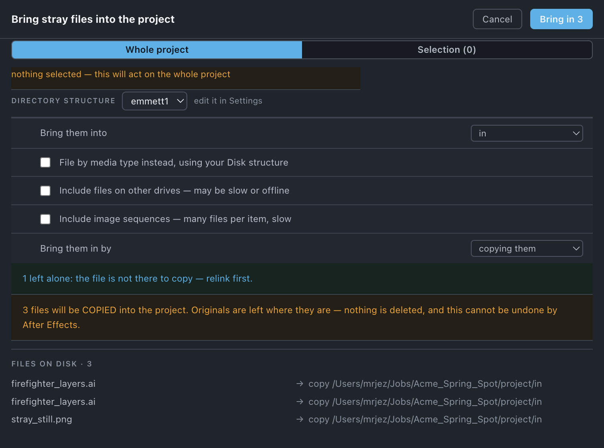

Gather
Finds the footage living outside your project directory and brings it in, by copying it or by moving it, so the job is self-contained.
Use it when
- The project reads a
.psdoff somebody's desktop, a logo out of Downloads, a plate from a server share — and you want it in one place before you archive it. - You are about to take a job onto a laptop and everything has to travel with it.
- A colleague built the project against media that lives where they put it, not where the project lives.
- You want to take ownership of media another project has been sharing, so that one can be retired.
What it does
Classifies every footage file as inside or outside the project directory, then brings the outside ones in — copying by default, moving if you say so. On a Managed directory they land in a destination from your disk structure, either one folder for everything or filed by media class. On an Unmanaged directory they land flat in an Into directory you pick, since there is no structure of yours to mirror. Anything it will not touch is listed with a reason.
What it does not do: it does not tidy files already inside the project — that is Sort disk — and it does not write a fresh copy of the whole job somewhere else (Collect does).
Do it
- Save the project. Where a file belongs is measured from where the
.aeplives. - Choose Directory structure, then where the files land — Bring them into on a managed directory, Into on an unmanaged one.
- Decide Bring them in by — copying them or moving them. Copy is the default.
- Read the left alone lines, then the list of files and destinations.
- Press Bring in n. A confirmation card follows with the count, the size and every destination, and it states which of the two things is about to happen: Files are copied into the project. Nothing on disk is deleted, but the copy happens outside the undo group, or the move wording below.
Scope. Project or Selection (n). A selection means "gather *these*": selected files skip the caution gates — another volume, an image sequence — because you pointed at each one. They do not skip the gates about a file not being movable at all: missing, shared with the machine, or tagged [KEEP].

What you'll see
| Option | What it means |
|---|---|
| Directory structure | Supplies both the destinations you can choose and the by-type scheme. |
| Bring them into | Managed only. One destination for everything, from the destinations your disk structure names. |
| Into | Unmanaged only. A directory you pick; files land flat, no scheme. Remembered against the job directory, so one pick serves every .aep under it. |
| File by media type instead, using your Disk structure | Managed only, off by default. Each stray goes where its media class routes it instead of to the one folder. |
| Include files on other drives — may be slow or offline | Off by default. |
| Include image sequences — many files per item, slow | Off by default. A sequence is one item and many files; the whole run travels or none does. |
| Bring them in by | copying them (default) or moving them. |
Notes it may raise, and what they mean:
- n left alone: the file is not there to copy — relink first. — Relink.
- n left alone: shared with every project on this machine. —
/Applications,/Library,/System,/Users/Shared,/usr,/optandLibrary/Application Support. Copying a plugin's own assets in would break every project using them. - n left alone: an image sequence is many files behind one item — switch the option on to include them.
- n left alone: on another volume — switch the option on to include them.
- n left alone: carries [KEEP]. — see Protected.
- n file(s) keep their folder name so same-named files do not overwrite each other — and where even the parent names match, both are left alone rather than one overwriting the other.
- Choose where gathered files should go (Into) — this project's directory is unmanaged, so Toolbox will not put them beside the project.
Undo
Neither mode is undoable by After Effects. Copy is recoverable in the sense that matters: the originals stay where they are, so deleting the copies puts you back. Move deletes the originals once the copy has verified and the item has been relinked, and nothing brings them back.
Watch out
Things you might not think to do
- Pull one stray off the desktop and touch nothing else. Select it first; the selection skips the caution gates, so a sequence or a file on another drive comes along without switching the whole run's options on.
- Gather a job spread over several server directories into one place. On an Unmanaged directory, Into takes them all, flat.
- File strays by media class instead of parking them. File by media type instead, using your Disk structure sends each one where Sort disk would have put it, leaving nothing to tidy.
Pairs with
Relink before it — a missing file has nothing to copy. Sort disk after it, to file what is now inside. Collect when you want a fresh self-contained copy rather than to make this project self-contained in place.